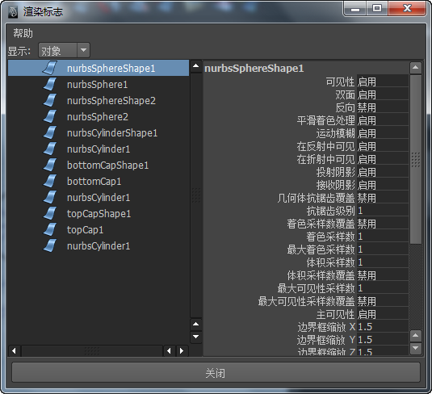
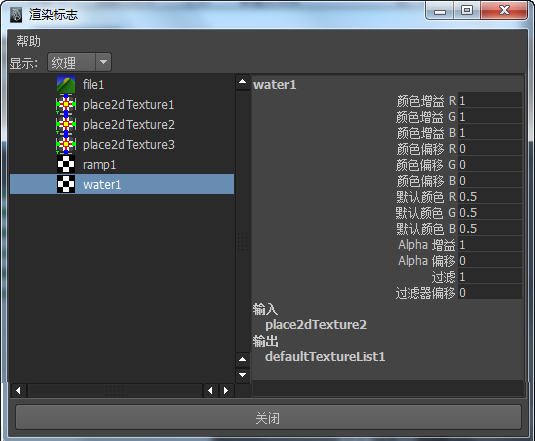
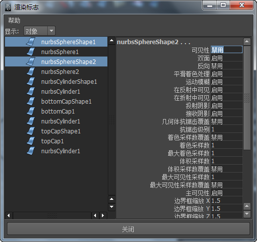

有关材质节点属性的详细说明，请参见关于表面材质、关于置换材质和关于体积材质。
可以一次调整一个节点（例如，如果需要在使用 IPR 时调整单个属性），也可以同时调整多个节点，方法是使用“属性编辑器”(Attribute Editor)的 “属性总表”(Attribute Spread Sheet) >“渲染标志”(Rendering Flags)窗口或“通道盒”(Channel Box)。
设定一个节点的属性
- 选择要调整其属性的节点，然后打开其属性编辑器。
可以在 Hypershade 中、节点编辑器中或大纲视图中选择节点。
如果要创建着色器图表，则可以在 Hypershade 特性编辑器中调整渲染节点属性。默认情况下，特性编辑器在模板视图（该视图为着色工作流而优化，且具有仅列出最常用属性的更简单布局）中显示渲染节点。通过在特性编辑器中单击
 ，可以切换到属性编辑器视图。
，可以切换到属性编辑器视图。
- 通过移动滑块或者在属性名称旁边的字段中键入值来调整属性。如果希望映射纹理、工具或光学效果，请单击属性名称末尾的映射按钮。
在“属性总表”(Attribute Spreadsheet)中设定多个渲染节点的属性
- 选择要调整其属性的表面或渲染节点。
- 选择窗口 > 常规编辑器 > 属性总表(Window > General Editors > Attribute Spread Sheet)。
- 单击选项卡标题以查看属性。
- “可设定关键帧”(Keyable)选项卡包含渲染节点属性。
- “渲染”(Render)选项卡包含用于确定如何渲染表面的属性。
- 使用滚动条可以水平查看属性。
- 向下拖动属性列可以选择其内容并选择顶部字段以选择列中的所有条目。
- 在选定属性列的顶部字段中键入所需值并按 Enter 键（Windows 和 Linux）或 Return 键 (Mac OS X)。
该列中的所有属性都将更新为新值。
在“渲染标志”(Rendering Flags)窗口中设定节点的属性
- 单击“窗口 > 渲染编辑器 > 渲染标志”(Windows > Rendering Editors > Rendering Flags)。
- 在“渲染标志”(Rendering Flags)窗口中，从“显示”(Show)下拉列表中，选择要查看其属性列表的项目。
这些项目的属性将在右侧面板中列出，您可以在其中更改和设定属性，就像在“通道盒”(Channel Box)中那样。
 - 执行下列操作之一：
- 若要更改一个节点的属性，请单击左侧面板中列出的节点以便在右侧面板中显示属性，然后更改属性。

- 若要更改若干相关对象的属性，请在“渲染标志”(Rendering Flags)窗口的左侧面板中选择这些对象，然后在右侧面板中设定属性值。例如，如果希望禁用场景中两个 NURBS 球体的可见性，请从左侧面板中选择两个球，然后在右侧面板中“可见性”(Visibility)旁边键入 off。

一旦更改选定项目的属性，列表中的标题颜色即会变化，以提醒您发生了更改。
提示：也可以使用“渲染标志”(Rendering Flags)窗口或“通道盒”(Channel Box)设定多个节点的属性。
- 若要更改一个节点的属性，请单击左侧面板中列出的节点以便在右侧面板中显示属性，然后更改属性。